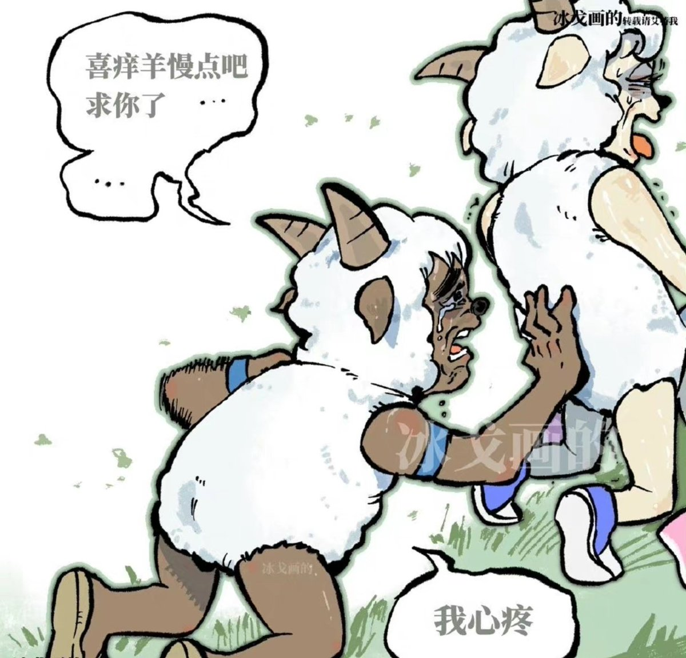

月影独下
@tadatsukiei
@LIGHTSEEKER1984 我也干过这样的事，只后悔没多带点水，大晚上回到酒店我俩一致决定再也不来这种露天演唱会了，第二天她还痛经，中午才爬起来，折磨得很。

The Gulag Bot
@LIGHTSEEKER1984
女人在追星，龟男在扇风
很典型的性压抑的龟男舔狗面相
女人在享受龟男提供的服务，心理肯定在嘲笑这个自作多情，自我感动的跳梁小丑
随便夸龟男两句，就让龟男高潮了🤣
这种男人连备胎都算不上，唯一能被女人正眼看的机会，就是底幻女在和男明星赛博神交的时候，它在旁边调整床的位置，顺便嘘寒问暖🤡 https://t.co/XMN9lXUCGb